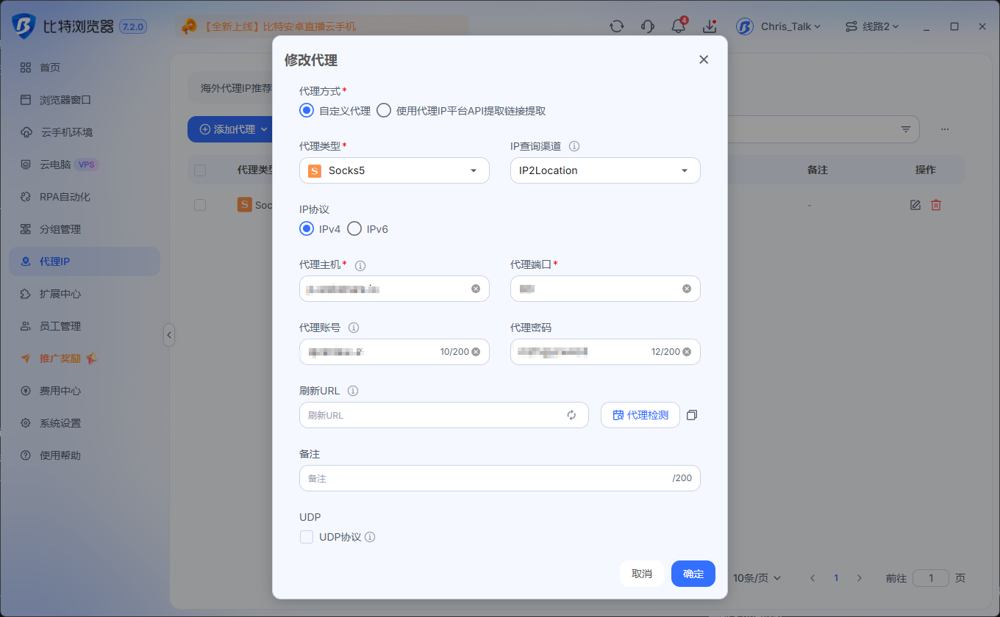
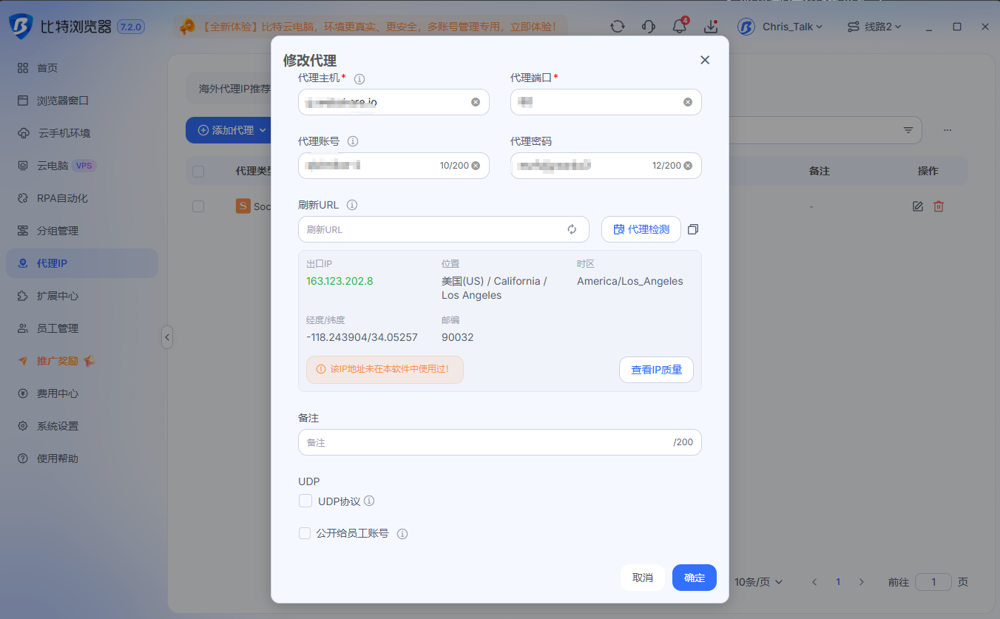

🎁 比特指纹浏览器配置环境，并使用 Wovia 虚拟卡白嫖一月 ChatGPT
本期要点： 本教程演示如何创建一个独立的比特浏览器环境，配置网络代理，登录 ChatGPT，并使用 Wovia 虚拟卡白嫖一月 ChatGPT。
🔗 相关链接
本期使用工具
网络代理
-
Webshare 住宅代理： 👉 点击注册 Webshare
-
Webshare 配套教程： 住宅代理购买与比特浏览器配置教程
其他工具与交流
🔍 IP 工具
一、准备工作
开始之前，需要提前准备：
- 已安装的比特指纹浏览器；
- 可以正常登录的 ChatGPT 账号；
- 自己有权使用的网络或代理服务；
- 已开通并充值的 Wovia 虚拟卡；
- 可以接收登录验证码的邮箱或手机号。
二、配置代理网络
在创建窗口页面找到 “代理设置”。
根据代理服务商提供的资料，依次填写：
- 代理协议；
- 代理主机；
- 代理端口；
- 代理账号；
- 代理密码。
填写完成后，点击 “代理检测”，确认代理可以正常连接。

检测成功后，再检查以下设置：
- 时区是否与当前网络地区一致；
- 语言是否符合实际使用情况；
- 地理位置是否设置为跟随 IP；
- 页面显示的 IP 地址是否正确。
这里的重点是保持网络、时区和语言设置稳定，并与真实使用资料一致。不要为了付款虚构地区或账单资料。

三、创建比特浏览器环境
打开比特浏览器，进入左侧的 “浏览器窗口” 页面，然后点击 “创建窗口”。
建议填写：
- 窗口名称： ChatGPT订阅；
- 浏览器： BitBrowser；
- 设备类型： PC；
- 操作系统： Windows；
- 浏览器内核： 选择当前稳定版本；
- 分组和标签： 可以根据自己的账号用途填写。
没有特殊需求的指纹项目，可以先保持默认设置，不建议在使用过程中频繁修改。


四、打开环境并登录 ChatGPT
保存环境后，返回浏览器窗口列表，点击 “打开”。
在新打开的浏览器中访问：
点击 “登录”，使用自己的邮箱、Google 账号或其他可用方式完成登录。
如果系统要求进行邮箱验证或安全验证，按照页面提示操作即可。


五、进入 ChatGPT 套餐订阅页面
登录 ChatGPT 后，点击左下角的账号头像，在菜单中找到：
升级套餐 / Upgrade Plan / Get Plus
不同账号看到的按钮名称可能略有区别，以实际页面为准。
进入套餐页面后，选择需要订阅的套餐，例如 ChatGPT Plus。
写作本文时，官方套餐页面显示 Plus 为每月 20 美元，最终价格、税费和可用套餐请以结账页面为准：


六、准备 Wovia 虚拟卡
本教程默认已经完成 Wovia 注册、开卡和充值，不再展开开卡过程。
打开 Wovia，进入卡片页面，选择准备使用的虚拟卡，然后查看：
- 卡号；
- 有效期；
- CVV 安全码；
- 持卡人资料；
- 平台提供的账单资料；
- 当前可用余额。
付款前需要确认：
- 卡片处于正常状态；
- 余额可以覆盖订阅金额、税费和可能产生的交易费用；
- 如果页面提供网络支付、国际支付或订阅支付开关，需要确认已经开启；
- 卡片产品是否明确支持当前使用场景。
Wovia 不同卡产品或卡段的适用范围可能不同，能否付款以 Wovia 当前页面、发卡机构和 ChatGPT 结账结果为准。


七、填写付款资料
返回 ChatGPT 的结账页面，按照页面要求填写：
- Card Number： Wovia 卡号；
- Expiration Date： 卡片有效期；
- CVC/CVV： 卡片安全码；
- Name on Card： 与发卡平台记录一致的持卡人姓名；
- Billing Address： 与发卡平台记录一致的真实账单资料；
- Postal Code： 对应账单地址的邮政编码。
不要随机填写账单地址。如果 Wovia 页面没有提供明确的账单资料，应先咨询发卡平台客服。
填写完成后，确认：
- 套餐名称；
- 实际扣款金额；
- 税费；
- 自动续费说明。
确认没有问题后，再点击订阅或付款按钮。提交一次后先等待页面返回结果，不要连续重复点击。

八、完成支付验证
提交付款后，可能出现以下情况：
- 直接付款成功；
- Wovia 应用内确认；
- 3D Secure 验证；
- 短信或邮箱验证码；
- 小额预授权。
如果页面要求验证，按照发卡平台的提示完成即可。

九、检查订阅结果
支付成功后，ChatGPT 页面通常会显示订阅成功。
可以进入账号设置，查看：
- 当前套餐名称；
- 下次续费日期；
- 付款方式；
- 账单或订阅管理入口。
同时进入 Wovia 查看扣款记录，确认金额是否正确。


十、自动续费提醒
ChatGPT 套餐通常会按照订阅周期自动续费。
如果准备继续使用，需要在续费日前确保卡片状态正常、余额充足。如果不需要继续订阅，可以提前进入 ChatGPT 的套餐管理页面取消自动续费。
具体续费日期和取消结果，以账号中的订阅管理页面为准。
总结
本期完成的主要流程是：
创建比特浏览器环境 → 配置代理网络 → 登录 ChatGPT → 选择套餐 → 填写 Wovia 卡片资料 → 完成支付验证 → 检查订阅状态
支付是否成功，最终仍取决于账号资格、卡片状态、发卡机构审核以及结账页面的实际结果。